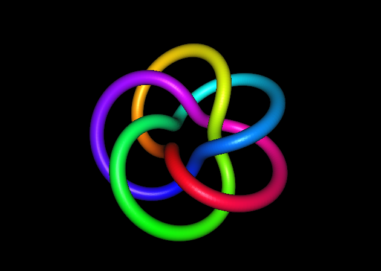
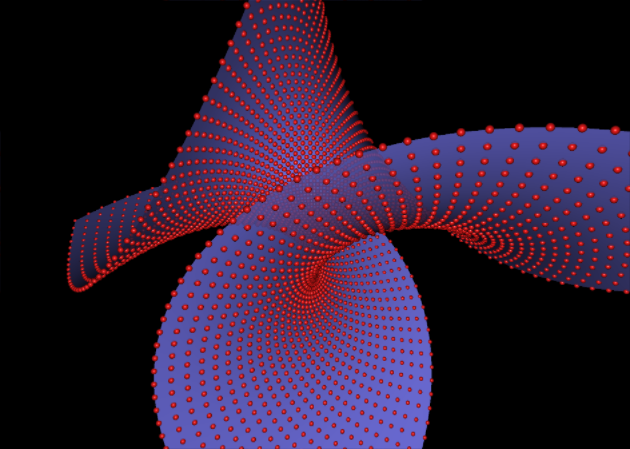
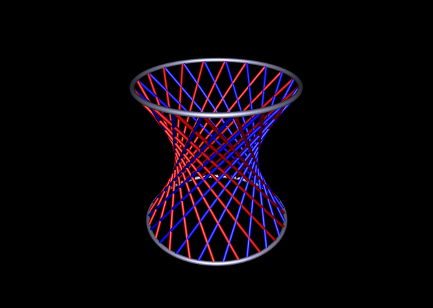

Twisted TorusDownload TwistedTorus.cdy |
Init. |
use("Cindy3D"); |
| Draw | background3d([0,0,0]); begin3d(); size3d(2.4); n=600; r1=1; r2=.6; k=5; l=3; // A and B are points on a circle f(w):=(sin(l*w),cos(l*w),0)*(r1+r2*cos(k*w+A.angle)) +(0,0,r2*sin(k*w+A.angle)); repeat(n,i, w1=i/n*360°; w2=(i+1)/n*360°; color3d(hue(i/n+B.angle/2*pi/l)); draw3d(f(w1),f(w2)); ); end3d() | |
Enneper SufaceDownload Enneper.cdy |
Init. |
use("Cindy3D"); renderhints3d(quality -> 6); |
| Draw | background3d([0,0,0]); begin3d(); res=.2; rr=30; ss=30; m=apply(-rr..rr,ii,u=ii/20; apply(-ss..ss,jj,v=jj/20; x = u - u^3/3 +u*v^2; y = v - v^3/3 +v*u^2; z= u^2 - v^2; (x,y,z))); size3d(.6); m=flatten(m,levels->1); color3d((.9,.1,.1)); forall(m,draw3d(#)); alpha3d(.8); color3d((.5,.5,1)); mesh3d(2*rr+1,2*ss+1,m,normaltype->"pervertex"); end3d() | |
HyperboloidDownload Hyperboloid.cdy |
Init. |
use("Cindy3D"); renderhints3d(quality -> 5); |
| Draw | background3d([0,0,0]); begin3d(); size3d(0.4); shininess3d(10); n=20; repeat(n,i, w1=i/n*360°; w2=w1+A.angle; // A is a point on a circle w3=w1-A.angle; color3d((0.8,0,0)); draw3d((sin(w1),cos(w1),-1),(sin(w2),cos(w2),1)); color3d((0,0,1)); draw3d((sin(w1),cos(w1),-1),(sin(w3),cos(w3),1)); ); n=150; size3d(0.6); repeat(n,i, w1=i/n*360°; w2=w1+1/n*360°; color3d((0.8,0.8,1)*.7); draw3d((sin(w1),cos(w1),-1),(sin(w2),cos(w2),-1)); draw3d((sin(w1),cos(w1),1),(sin(w2),cos(w2),1)); ); end3d() | |